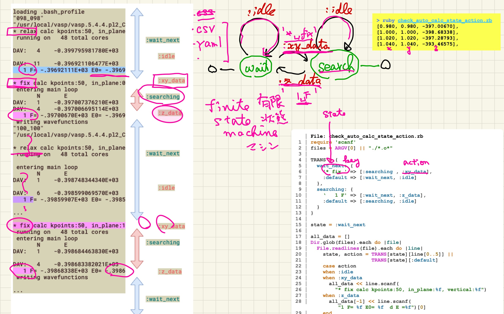

complex fsm (finite state machine)
Table of Contents
1. fsm(finite state machine)
logや計算結果から特定のデータを取り出すためのパターン．
2. outline
|  |
左のデータで，
- linesを回しながら，
- key('* fix ',' 1 F')でstate(:wait_next, :searching)を変え,
- action(:xy_data, :z_data, :idle)をとる
LL.4-13で用意したHash構造を使って， LL.20-1で，line[0..5]をkeyとして[state, action]を調整している．．
3. description
詳しい解説．．．
keyやactionの中身は， 別メソッドにしてより複雑な処理に変更することで， どのような構造を持った文書からでも， 特定のデータを取り出すことができる．
4. code and data
- source : check_auto_calc_state_action.rb
- data(一部) :
- resutls : fsm_results.txt
5. links
- readlines
- hash
- case
6. references
- チャート式ruby-appendix-V(finite state element) daddygongon, (2024/07/06 accessed.)
- 達人プログラマー(第2版): 熟達に向けたあなたの旅 (日本語) 単行本 – 2020/11/21David Thomas (著), Andrew Hunt (著), 村上 雅章 (翻訳), オーム社; 第2版 (2020/11/21), p176.
- Rubyベストプラクティス -プロフェッショナルによるコードとテクニック，Gregory Brown (著), 高橋 征義 (監訳), 笹井 崇司 (翻訳)、オライリージャパン (2010/3/26)， Ruby Best Practices by Gregory T Brown, O'Reilly, ↩ ↩2